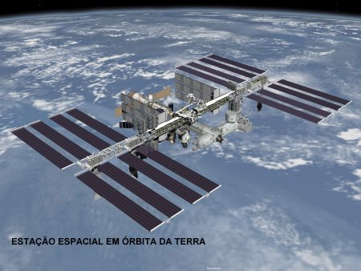
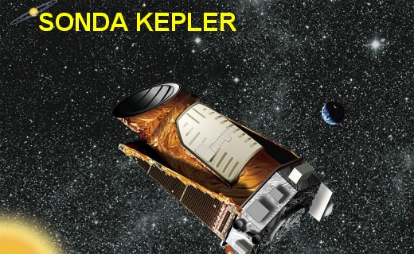
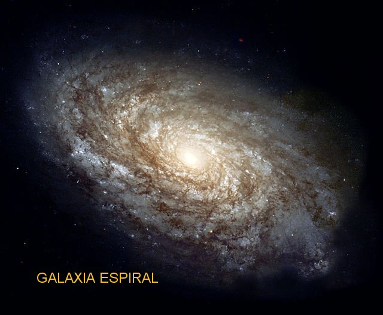
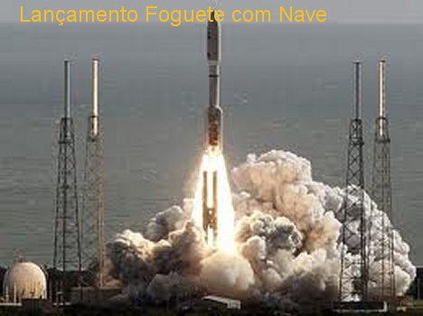
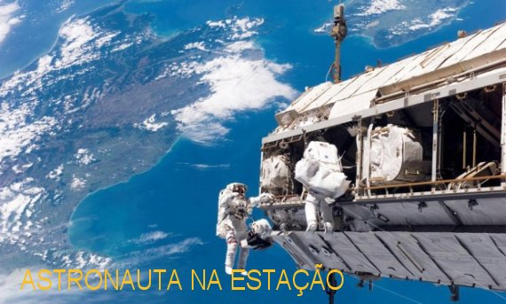

SABEDORIA DIVINA
TUDO TEM FINALIDADE
A sapiência
Divina é imutável e eterna, sempre existiu em plenitude. As Obras de DEUS nunca
requerem reparos ou emendas, são perfeitas, 
Por isso mesmo, sabendo que a criação é obra do Amor de DEUS, nossa mente sempre é convidada a raciocinar: tudo o que foi criado, desde as menores coisas até as grandezas admiráveis do universo, incluindo os astros e as estrelas que iluminam e embelezam o firmamento das noites terrestres, tudo o que existe, tem a sua finalidade, não foi criado em vão.
Olhamos prazerosamente e examinamos o espaço sideral vendo aquele conjunto de notáveis astros e estrelas tão brilhantes, com um equilíbrio e uma natural obediência à determinada trajetória, a impressionante atuação da força de gravidade das grandes massas dos astros, atuando e influenciando corpos celestes menores e planetas próximos, que nos propõem a acreditar que tudo acontece não por mera coincidência da natureza, mas por uma Vontade Superior que ordena e determina e administra todos os fatos. Então, esta realidade, por si só, nos faz compreender que tudo isto existe para cumprir uma missão no universo Divino, e, portanto, tudo tem a sua utilidade, mesmo que não encontramos recursos em nosso raciocínio para entendê-las e explicá-las.
Nesta linha de imaginação, muitas pessoas raciocinam que como existe vida aqui na Terra, o SENHOR deve ter permitido que alguns planetas também sejam habitados por outras civilizações, semelhantes à civilização terrestre. E com esta e outras suposições, na ânsia de descobrir, de saber como aconteceu à formação do universo e de entender os astros, diversas nações se uniram e construíram telescópios imensos, a fim de facilitar as pesquisas e os estudos dos astrônomos e especialistas, objetivando lhes permitir perscrutar as profundezas e a imensidão celeste, em busca de explicações e a procura de vida.
Desde o início, os cientistas e estudiosos da astronomia, não ficaram satisfeitos somente com as deduções da lógica e a explicação religiosa para a criação, por isso decidiram buscar algum meio a fim de poderem pesquisar com minúcia, a evolução dos astros e a formação do universo baseados em conceitos e enunciados científicos.
E assim, construíram possantes telescópios nos Estados Unidos da América do Norte; também um Telescópio bem versátil na Inglaterra, outro muito diferente na China e outro grande telescópio na Rússia. Tudo, como passo inicial para a metódica e científica exploração do universo. Depois, na continuidade, com a expansão das pesquisas, as diversas nações do mundo, cada uma construíram os seus próprios telescópios para estudo da astronomia e observação espacial, e hoje, praticamente em quase todos os países, existem até mais de um telescópio.
Em 1946 o USA construiu o famoso Telescópio Espacial Hubble e o colocou em órbita ao redor da Terra, o qual continua sendo muito utilizado, fornecendo um grande conjunto de informações interessantes e úteis.
Na sequência, os Estados Unidos e a Rússia, construíram possantes foguetes espaciais que culminaram levando o homem a Lua, realizando explorações e pesquisas de valores incalculáveis.
A versatilidade dos foguetes fez nascer o projeto da Estação Espacial, que foi colocada em órbita da Terra. Esta Estação Internacional foi construída com o esforço de diversas nações, e está completamente equipada com moderno laboratório de astronomia, onde foram feitas muitas experiências e pesquisas, e de onde também tiraram magníficas fotografias do globo terrestre. Verdadeiramente a Estação Orbital passou a funcionar como um satélite da Terra, aonde os astronautas chegam embarcados numa nave espacial, e nela permanecem durante vários meses, realizando experiências e estudos. Há 10 anos continuam a explorá-la com êxito e excelentes resultados.
Nesta mesma época, lançaram foguetes com artefatos espaciais não tripulados, a Marte e Saturno, conseguindo preciosas informações sobre os dois planetas e sobre o espaço sideral, esclarecendo dúvidas no imenso conjunto de interrogações nas pesquisas espaciais.
À medida que as notícias eram divulgadas, em diversos países surgiram outros Observatórios Astronômicos, mais aperfeiçoados e com uma tecnologia mais avançada, facilitando o desenvolvimento dos estudos e abrindo outras janelas ao conhecimento científico.
No Chile, o deserto do Atacama é um local privilegiado, o qual vem sendo escolhido pelos cientistas do mundo inteiro, porque lá, em 365 dias do ano, não chove em cerca de 300 dias. O céu se apresenta totalmente claro, sem nuvens, facilitando a observação astronômica. E embora já existindo no país andino, outras instalações importantes, que sempre foram utilizadas com frequência pelos estudiosos, diversas nações se uniram num esforço conjunto e agora terminaram de construir no deserto do Atacama, no norte chileno, na Planície Chajnantor, a 5.000 metros de altura, ao lado da Cordilheira dos Andes, um conjunto extraordinário de Radiotelescópios, que é o maior e mais poderoso do mundo, e que recebeu o nome de ALMA. O ALMA que está próximo a pequena cidade de San Pedro do Atacama, em pleno deserto, tem 66 grandes antenas que podem operar conjugadas, aumentando de maneira impressionante a profundidade e a perfeição da pesquisa. E este monumental Radiotelescópio foi construído especialmente para investigar a origem do universo e da vida.
A VIA LÁCTEA

E não podemos nos esquecer de realçar aqui, que a Via Láctea não é a única neste imenso e maravilhoso Universo, existem centenas de outras Galáxias, que contém uma quantidade incontável de “Sistemas Solares” , semelhantes ao nosso, e também com milhares de planetas em suas respectivas órbitas. É um grande “Mistério” que nos deixa perplexos e cheios de admiração.
PRIMEIROS BENEFÍCIOS
Desde que os USA e a Rússia começou com a corrida armamentista, e mais precisamente, depois que o homem pisou na Lua, em 20 de Julho de 1969, as invenções que os laboratórios e os cientistas realizaram como coadjuvantes necessários na exploração do espaço, na sequência dos acontecimentos os inventos tiveram notáveis aplicações na Terra, prestando precioso auxilio na vida dos cidadãos comuns, passando a fazer parte do nosso quotidiano. Entre eles, citamos: equipamentos sem fio, fraldas infantis descartáveis, frigideiras e panelas de teflon, termômetros digitais, o GPS, códigos de barra, as informações dos satélites meteorológicos, o raio laser, aparelhos e equipamentos hospitalares, monitores cardíacos, etc.
Por outro lado, além da missão na Lua, do êxito de colocar satélites ao redor da Terra, e da construção da notável Estação Orbital Internacional, os USA também mandou diversos artefatos para pesquisar o Sistema Solar, e conseguiu muitas informações: sobre as explosões solares, sobre o clima e a temperatura no Planeta Saturno e nos seus anéis, no Planeta Júpiter e também pesquisou Marte. Neste último Planeta, que mais se assemelha com a Terra que habitamos, os seus dias têm a duração um pouquinho maior que a nossa, apenas 39 minutos. Com a intenção de pesquisar o Planeta, a NASA enviou a “Sonda Espacial Phoenix”, em 2008, que confirmou a existência de água em Marte. Os Estados Unidos também mandaram um Robô Jipe Espacial, o “Curiosity”, que permaneceu em atividade em Marte, durante um ano, fazendo notáveis descobertas, inclusive, de que o Planeta, abrigou algum tipo de vida há bilhões de anos, quando era menos árido e menos frio. Na verdade, a intenção dos cientistas, a longo prazo, é construir em Marte uma colônia terrestre, para abrigar os cientistas e o pessoal da exploração espacial. Entretanto, o grande desafio é à distância de 570 milhões de quilômetros, que faz com que uma viagem demore de seis a nove meses, e o combustível dos foguetes atuais dá somente para a viagem de ida, não sobra para a volta! Também será necessário se fazer uma competente preparação dos astronautas com relação ao clima marciano, que é seco e gelado. A atmosfera é composta de 95% de dióxido de carbono e a pressão atmosférica, na superfície do Planeta, equivale à medida da pressão na Terra na altitude de 25 quilômetros. Também, a gravidade marciana é muito baixa, cerca de um 1/3 da gravidade terrestre. Estas condições, tão diferentes do nosso Planeta, vão exigir um treinamento muito especializado dos astronautas, assim como, uma pesquisa minuciosa no sentido de se conhecer, nos seres humanos, os efeitos da baixa gravidade, da exposição à radiação solar considerando que a camada de ozônio encontrado na atmosfera de Marte é extremamente insignificante, além dos efeitos psicológicos causados pelo isolamento e confinamento das pessoas nas estações espaciais, e também, nas longas viagens de ida e volta pelo espaço.
Sem dúvida a expectativa de explorar o Planeta Marte é um sonho que ao longo dos próximos anos poderá se concretizar. Entretanto o mesmo não se pode dizer quanto a Plutão, ou seja, a possibilidade de se imaginar uma viagem ao Planeta que é o último do Sistema Solar. Isto porque, nas pesquisas realizadas, para uma viagem ao Planeta Plutão, à situação é muito mais complicada, pois os foguetes atuais demorariam quase 10 anos para ir e mais outros 10 anos para voltar. A Sonda americana denominada “New Horizons” foi lançada no dia 19 de Janeiro de 2006 e só se aproximará do Planeta Plutão no dia 14 de Julho de 2015, quando começará a fotografá-lo e colher informações mais detalhadas sobre o mesmo.
Todavia, Plutão não é tão desconhecido nos meios científicos, pois, pelas observações e estudos através dos possantes Radiotelescópios, sabe-se que o solo é constituído de rocha e gelo, quase em partes iguais. O ano de Plutão, ou seja, o tempo que ele utiliza para realizar uma volta completa na sua órbita ao redor do sol, demora cerca de 248 anos terrestres. Então, verdadeiramente é muito mais difícil de chegar lá, com os foguetes atuais.
FRUTOS DAS PESQUISAS E INVENTOS
Com certeza, a pesquisa
espacial foi e continua sendo uma grande conquista tecnológica para a humanidade,
isto porque, todo o empenho que os cientistas têm dedicado ao programa
interplanetário, lhes tem possibilitado 
Esta realidade nos permite afirmar que os pesquisadores, com seus inventos e descobertas, mesmo sem que tivessem uma intenção deliberada, tem trabalhado em benefício do próximo, ou seja, da humanidade em geral, e naturalmente, mesmo que não tenham consciência da realidade, estão recebendo a dádiva da aprovação e da mais carinhosa bênção Divina.
Tendo em vista estes fatos, somos conduzidos a lembrar sempre a imensa Bondade de DEUS, que brilha com raios fulgurantes em todo o desenrolar das pesquisas e dos inventos, objetivando que tudo aconteça para o bem-estar e a felicidade da humanidade de todas as gerações.
Nas páginas do Novo Testamento, os Evangelistas anotaram os dizeres de JESUS: “EU vim para que tenham a vida e a tenham em plenitude”. (Jo 10, 10) Isto porque, o desejo Divino é que a humanidade tenha uma confortável, saudável e abundante existência, cultivando o amor, o entendimento e a fraternidade, e buscando, sobretudo, estabelecer a harmonia, o bom diálogo e a paz entre as pessoas e as nações.
IMENSIDÃO AO NOSSO DISPOR
Esta realidade nos traz presente à grandeza impressionante do infinito Amor de DEUS pela humanidade, dimensão que não dá para ser medida e muita menos calculada, porque é incomensurável.
DEUS é AMOR, e a imensidão do Amor Divino, sempre está acompanhado da Misericórdia e da ilimitada Bondade do SENHOR, que derrama todos os bens em benefício dos seus filhos. E tanto é assim, que ELE colocou no universo, tudo o que existe a disposição da humanidade, com total liberdade de acesso, de uso, de construir, embelezar e até morar. E veja, é muito trabalho, olhando para o céu, percebemos a sua grandeza infinita, e mais, a quantidade notável de galáxias aponta para uma incalculável existência de planetas, de todos os tipos e tamanhos, que não temos recursos nem para imaginar as suas constituições, dimensões, clima, solo e características. E são tantos, que por certo, a Bondade de DEUS nos permite até pensar, que não estamos sozinhos nessa imensidão maravilhosa, que entre os milhares de Planetas que povoam o universo, existe pelo menos mais um ou mais Planetas, que poderão possuir as características e constituições de vida semelhantes às da Terra. E assim sendo, eles também poderão ser habitados por pessoas como nós, com um corpo e uma alma.
OPINIÕES DIVERGENTES
Por isso mesmo, ao pensarmos em DEUS, automaticamente o nosso cérebro se direciona para o bem e para a vida, precioso e sagrado dom que recebemos do CRIADOR e que apesar de nossos muitos pecados, fomos também Redimidos pelo SENHOR JESUS a peso de muitos sofrimentos e sacrifícios, e de uma terrível e violenta morte na Cruz. E pelo fato do drama da Paixão e Morte do SENHOR ter ocorrido em nosso Planeta Terra, algumas pessoas afirmam que a Redenção Divina foi para os habitantes da Terra e não para os habitantes de outros Planetas. Estas pessoas argumentam dizendo: “Se existir habitantes em outros Planetas, eles não conhecem a Redenção de JESUS! Se eles tiverem a necessidade de redenção, em face dos seus próprios pecados, ela terá que existir de outra forma!”
Nós não concordamos com este argumento de maneira nenhuma, por uma razão muito simples: quando DEUS criou o mundo, fez a Terra e todos os demais Planetas nos seus diferentes “Sistemas”. O CRIADOR não criou somente o Planeta Terra, ou só o Sistema Solar, e sim o Universo no seu todo, com suas múltiplas Galáxias, recheadas de Constelações e com milhares de “Sistemas Planetários”, e milhões de Corpos Celestes e Planetas de todos os tamanhos.
Assim sendo, a Redenção do SENHOR JESUS, foi universal, em benefício de todas as gerações dos habitantes do Universo Divino, que sendo seres humanos, parecidos ou semelhantes a nós, possuem também um Corpo e uma Alma, e por isso mesmo, sujeitos ao pecado e a transgressão. Sim, por que do mesmo modo, nós como eles, homens e mulheres expostos à ação destruidora do maligno, necessitamos da Redenção Divina para existir e viver em plenitude, conforme a Vontade e o Desejo do FILHO DE DEUS, caso contrário, sem a Redenção Divina, não poderia existir Salvação para o gênero humano, para nós e para eles.
SEMELHANÇA FÍSICA
Pelas considerações mencionadas, firmamos o nosso ponto de vista de que se houver outros habitantes no Universo, com certeza eles serão como nós, parecidos fisicamente conosco, com um corpo e uma alma. De nenhum modo acreditamos que eles sejam diferentes fisionomicamente, por exemplo: com quatro pernas, ou com duas cabeças ou três olhos, etc., como aparece nos desenhos das ficções.
Isto porque não há razão e nem motivo para uma variedade física de seres humanos, considerando que DEUS é apenas UM, o CRIADOR e Todo-Poderoso Rei do Universo, e nós fomos “inventados” por ELE, segundo a Sua Imagem e Semelhança. Todos nós nascemos pela Suprema Vontade de nosso DEUS, que nos dá uma alma, a qual recheou com dons e virtudes, nos concedendo o dom da vida com uma missão a cumprir. Então, esta é uma posição evidente e racional, que deve ser generalizada, isto é, que assim deve acontecer com toda a humanidade, seja ela no Planeta Terra ou em qualquer outro Planeta.

